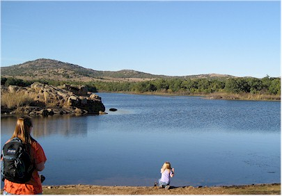
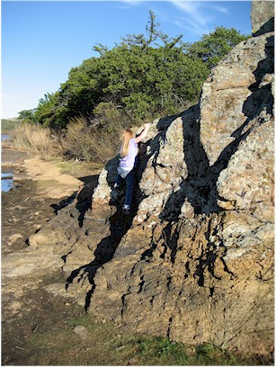
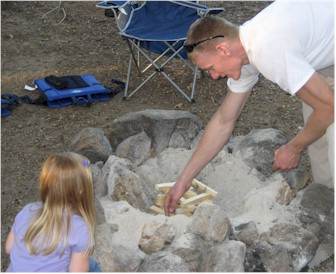
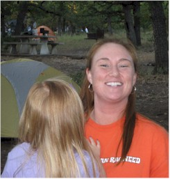
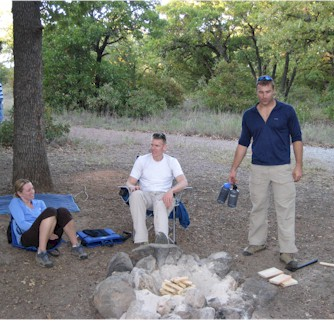
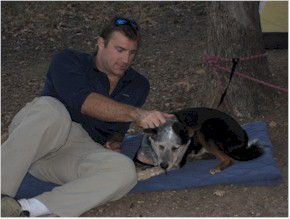
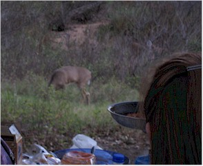

October 25, 2008
| After spending the morning in Tulsa with Mom
& Dorinda, I spent the afternoon and evening with some other friends
in the Wichita Mountains Wildlife Refuge. We had planned to camp,
but ended up leaving around 10pm. We had a great night, complete
with deep thoughts around the campfire. It was a nice trip. |
|
 |
 |
| First I met Catherine & Natalie for a "hike" around the
lake. |
Natalie's dad used to be Eric's climbing partner. I guess it's in her genes. |
 |
 |
| Here Luc teaches Natalie how to start a fire, just like they taught him in the Girl Scouts. (Jokes!) |
A happy Catherine |
 |
 |
| Happy Cassie & Luc with a brooding Steve | Here's Steve, showing Jess the affection she deserves. |
|
 |
Later a couple of deer came up practically into our camp site. Even later Helen arrived with |